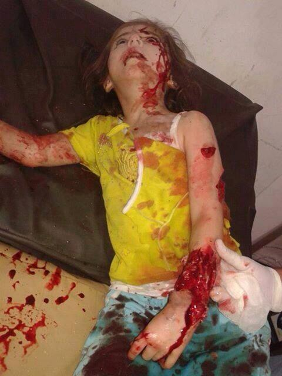
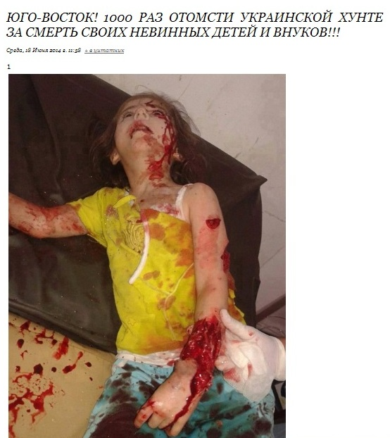
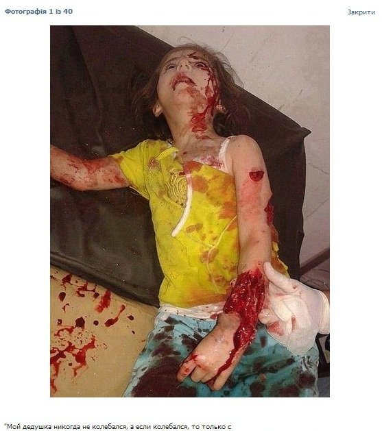
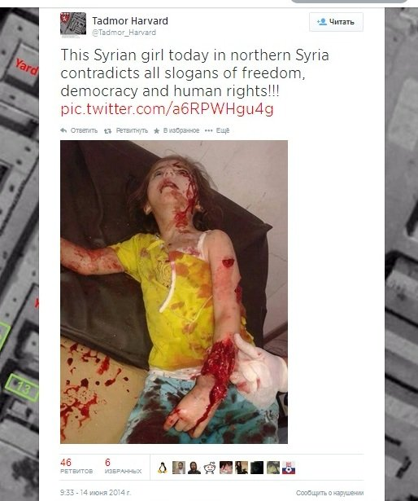

Фото убитой в Сирии девочки выдают за снимок погибшей на Юго-Востоке Украины
18 июня на своей странице в Liveinternet пользователь Полковник Баранец поместил фото убитого ребенка с призывом к Юго-Востоку Украины отомстить «украинской хунте за смерть своих невинных детей и внуков».Полковник Баранец известен читателям «Комсомольской Правды» как военный обозреватель данного издания.
Фото моментально разлетелось по соцсетям Твиттер и ВКонтакте.
Однако данное фото не имеет никакого отношения к происходящему на Юго-Востоке Украины.Это снимок убитой девочки в Сирии, который появился в соц.сети Твиттер 13 июня и активно начал распространяться в соц.сетях 14 июня.
Ранее мы уже писали о фейковых фотографиях якобы погибших детей на Юго-Востоке .
Posted On: 2014-06-19T21:00:00




Content Date: 2014-06-19
Download Date: 2021-07-16
Document ID: L0C04FDDA